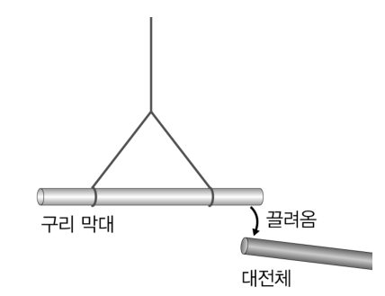
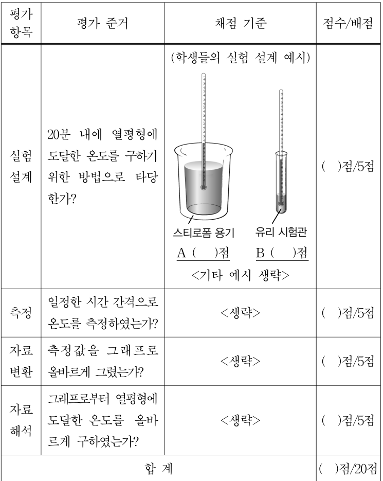
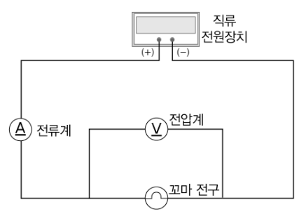

교육론 객관식 4문항 — 순환 학습·과학적 사고·채점표·개념 변화Learning cycle · abduction and logical fallacy · rubric types · conceptual-change models
2011학년도 중등교사 임용시험 물리 1차(객관식) 1~4번 — 물리교육론 문항 묶음. 각 문항에서 알맞은 답을 고르시오.
- 순환 학습: 탐색(경험) → 개념 도입(용어·설명) → 개념 적용의 3단계를 되풀이한다.
- 연역: 일반 원리 → 개별 예측. 귀납: 여러 사례 → 일반화. 귀추: 현상을 설명할 가설을 만들어 냄.
- 광전 효과: 빛의 진동수가 한계 진동수보다 작으면 빛이 아무리 세도 전자가 튀어나오지 않는다.
다음은 로슨(A. Lawson)의 3단계 순환학습 모형을 연속하여 적용한 단계별 수업 계획이다. 제시된 단계들은 순환학습 모형의 각 단계에 해당된다.
단계 1. 교사는 광전효과 실험 장치를 설치해 준 다음, 광전관에 빛을 쪼이면 어떤 현상이 일어나지 알아보도록 한다. 학생들은 실험을 통해 광전관에 쪼이는 빛의 세기가 셀수록 광전관에 흐르는 전류가 증가하는 현상을 관찰한다. 학생들은 자신의 실험결과를 발표한다.
단계 2. 교사는 학생들이 수행한 실험결과와 관련지어 광전효과의 기본적인 개념을 소개한다.
단계 3. 학생들은 광전효과를 이용한 사례를 일상적 상황에서 찾아보고 여러 학생들과 토론한다.
단계 4. 교사는 다른 광원을 이용하여 센 빛을 쪼여주어도 광전효과가 일어나지 않는 현상을 보여주고, 관련 자료를 제공하여 이유를 제안하도록 격려한다. 학생들은 빛의 파장이 길면 광전효과가 일어나지 않는다는 가설을 세우고, 이 가설을 검증하기 위한 실험을 설계하고 수행하여 결과를 발표한다.
단계 5. <생략>
단계 6. <생략>
이 수업 계획에 대한 설명으로 옳은 것만을 <보기>에서 모두 고른 것은? [2.5점]
- ㄱ. 단계 4는 서술적 순환학습 모형의 ‘탐색’ 단계이다.
- ㄴ. 단계 5에 도입될 중요 개념에는 ‘한계 진동수’가 포함된다.
- ㄷ. 2009 개정 과학과 교육과정의 물리Ⅱ에서는 이 수업 내용이 ‘물질의 이중성’ 영역의 ‘빛의 입자성’ 내용 요소에 해당된다.
- 단계 1~3이 첫 번째 순환(탐색–개념 도입–적용)이면 단계 4~6은 두 번째 순환이다.
- 단계 4에서 학생들은 가설을 세우고 검증 실험을 설계한다 — 어떤 유형의 순환 학습인가?
- 광자 하나의 에너지 \(E=hf\). 금속에서 전자를 떼어 내려면 \(hf\ge W\)(일함수).
다음은 김교사와 영희의 대화이다.
김교사: (구리 막대를 실에 매달고, 대전체를 구리 막대에 가까이 가져갔을 때, 구리 막대가 대전체에 끌려오는 현상을 제시하면서) 구리 막대가 왜 대전체에 끌려왔을까요?

영희: 이런 현상을 처음 보지만, 제 생각에는 구리가 금속이라서 그런가 봐요. (가) 금속은 대전체에 끌려와요.
김교사: 그 생각이 맞는지 어떻게 알아볼 수 있을까요?
영희: 알루미늄 막대로 바꾸어서 똑같이 해 봐요. (나) 알루미늄 막대도 금속이니까 대전체에 끌려올 거예요.
김교사: 그럼, 해보세요.
(위 실험을 알루미늄 막대로 바꾸어서 실험했을 때, (다) 알루미늄 막대가 대전체에 끌려왔다.)
김교사: 결과에 대하여 어떻게 생각하나요?
영희: (라) 금속은 대전체에 끌려온다는 제 생각이 옳아요.
김교사: 다른 금속으로 더 해 볼까요?
영희: 다른 금속으로 더 해 볼 필요가 없다고 생각해요.
김교사와 영희의 대화 내용에 대한 설명으로 옳은 것만을 <보기>에서 모두 고른 것은?
- ㄱ. (가)는 귀납적 일반화를 통해 얻었다.
- ㄴ. 영희가 (가)의 생각으로부터 (나)의 예상을 하는 과정에는 연역적 방법이 포함된다.
- ㄷ. 영희가 (가)에 근거한 (나)의 예상과 (다)의 결과가 일치한 것을 근거로 (라)의 결론을 내렸다면, 이는 논리적으로는 오류(후건 긍정의 오류)에 해당된다.
- 영희는 사례를 하나만 보고 ‘금속이라서 그런가 봐요’라고 했다 — 여러 사례의 일반화인가, 현상을 설명할 가설의 생성인가?
- ‘P이면 Q, Q이다, 그러므로 P’는 타당한 논증인가?
- 대전체를 가까이하면 금속에서는 자유 전자가 이동(정전기 유도), 부도체에서는 분자가 분극되어 둘 다 끌려온다.
다음은 [실험 평가 과제]와 [채점표]이다.
[실험 평가 과제]
<실험 목표> 주어진 실험 준비물 중 적절한 것을 선택하여 시간에 따라 변하는 물의 온도를 측정하고 물이 열평형에 도달한 온도로부터 실온을 구할 수 있다.
<실험 수행 조건> ○ 20분 내에 실험을 완결해야 한다. ○ 주어진 실험 준비물 중 적절한 것을 선택하여 구체적인 실험 방법을 설계한다. ○ 측정 결과를 그래프로 나타낸다.
<실험 준비물> 스티로폼 용기(500 mL), 유리 시험관(50 mL), 50 ℃ 물, 온도계, 초시계 등

이 [실험 평가 과제]와 [채점표]에 대한 설명으로 옳은 것만을 <보기>에서 모두 고른 것은?
- ㄱ. <실험 수행 조건>으로 보아 채점 기준에서 A보다 B에 더 높은 점수를 부여하는 것이 타당하다.
- ㄴ. 이 [채점표]의 유형은 ‘총체적(holistic) 채점표’에 해당된다.
- ㄷ. 이 [채점표]는 가설–연역적 사고 능력을 평가하는 데 적절하다.
- 50 ℃ 물이 실온이 될 때까지 걸리는 시간은 단열 용기와 얇은 유리 시험관 중 어느 쪽이 짧은가?
- 평가 항목별로 따로 점수를 매기는 채점표는 무엇이라 하는가?
- 뜨거운 물체와 주위의 온도 차가 클수록 빨리 식고, 결국 주위 온도와 같아진다(열평형).
다음은 교사의 수업 계획이다.
(가) 다음과 같은 선개념을 학생이 가지고 있음을 확인한다. ‘전압은 전류와 저항의 곱이다. ㉠ 물체의 저항은 온도에 무관하다.’
(나) 전압과 전류의 관계가 직선으로 나타난 그래프를 제시하고, 그래프로부터 저항값을 구하게 한다.
(다) 다음 그림과 같은 회로에서 전압과 전류의 관계가 곡선으로 나타난 그래프를 제시하고, 왜 곡선으로 나타났는지 말해보게 한다.

(라) 저항에 열이 발생하면 저항값이 온도에 따라 변함을 설명해준다.
이 수업 계획에 대한 설명으로 가장 적절한 것은? [2.5점]
- 선행조직자는 누가, 언제 제시하는가?
- (나)의 직선 그래프는 학생의 선개념과 일치하는가, 어긋나는가?
- 하슈웨 모형의 두 갈등: 선개념–현상(환경), 선개념–새 과학 개념(인지구조 내).
- 금속 저항은 온도가 오르면 커진다(원자 진동이 커져 전자의 이동을 방해). 꼬마전구 필라멘트는 수천 K까지 뜨거워진다.